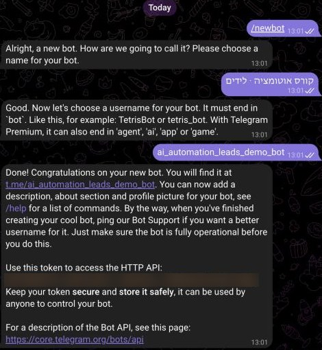
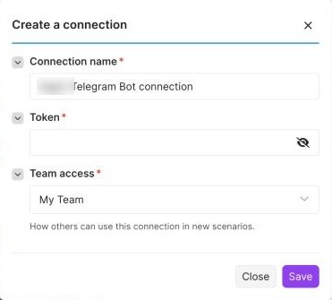
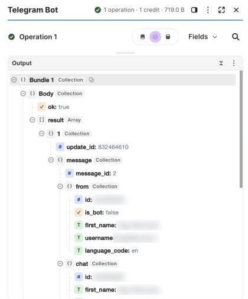
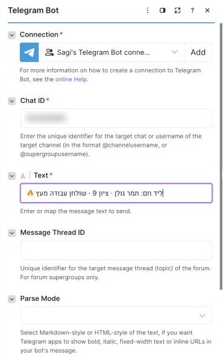
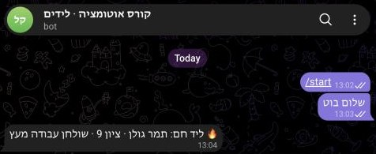

לפני שמתחילים
מה זה בוט, ולמה Telegram
בוט ב-Telegram הוא "משתמש" שמנוהל על ידי תוכנה ולא על ידי אדם. אפשר לשלוח לו הודעות, והוא יכול לשלוח הודעות לכם. בקורס הבוט הוא ערוץ התראות: כשנכנס ליד חם, Make שולח דרכו הודעה לטלפון של הנציג תוך שנייה.
- 💳 כמה זה עולה
כלום. פתיחת בוט ושליחת הודעות דרך ה-API של Telegram חינמיות. ב-Make כל שליחה היא פעולה אחת (קרדיט אחד). - 🧰 מה צריך מראש
חשבון Telegram (באפליקציה בטלפון, או במחשב ב-web.telegram.orgאחרי סריקת QR מהטלפון), וחשבון Make פעיל (מדריך ההרשמה ל-Make). - 🔑 שלושה מושגים
BotFather — הבוט הרשמי של Telegram שיוצר בוטים. טוקן — המפתח של הבוט, Make משתמש בו כדי לדבר בשמו. chat_id — המספר של השיחה שאליה שולחים, כמו "כתובת" של הנמען.
שלב 1
פותחים בוט ב-BotFather
- ב-Telegram לוחצים על החיפוש ומקלידים BotFather. בוחרים את זה עם ✔ כחול (יש התחזויות — בלי ✔ לא נוגעים)
- לוחצים Start, ואז שולחים
/newbot - BotFather שואל על שם תצוגה: כותבים מה שרוצים, גם בעברית. למשל לידים · בית ועיצוב
- אחר כך על שם משתמש: באנגלית, בלי רווחים, וחייב להיגמר ב-
bot. למשלbeit_design_leads_bot - אם השם תפוס ("Sorry, this username is already taken") — מוסיפים מספר או את השם שלכם, ומנסים שוב
- BotFather עונה "Done! Congratulations" עם הטוקן בכתום (נראה כך:
123456789:AAE…). לוחצים עליו כדי להעתיק

הטוקן הוא סיסמהמי שמחזיק אותו שולט בבוט: קורא הודעות ושולח בשמו. לא שולחים אותו בוואטסאפ, לא מדביקים בצ'אט (גם לא בצ'אט עם AI), ולא מצלמים. דלף? ב-BotFather:
/revoke ← בוחרים את הבוט ← מקבלים טוקן חדש, והישן מפסיק לעבוד מיד. אחר כך מעדכנים את החיבור ב-Make.שלב 2
שולחים לבוט /start
- בהודעה של BotFather לוחצים על הקישור
t.me/שם_הבוט_שלכם - נפתחת שיחה ריקה עם הבוט ("No messages here yet"). לוחצים START בתחתית
- שולחים לו עוד הודעה קצרה, למשל "שלום בוט"
למה זה חובהבוט לא יכול לפנות ראשון לאף אחד. רק אחרי שכתבתם לו, Telegram מרשה לו לשלוח לכם הודעות — ורק אז ה-chat_id שלכם מופיע אצלו (שלב 4).
שלב 3
מחברים את הבוט ל-Make
- ב-Make: Create scenario ← + ← מחפשים telegram ← Telegram Bot
- לוחצים Show more ובוחרים Make an API Call
- ליד Connection: Create a connection
- מדביקים את הטוקן בשדה Token ← Save

שלב 4
מוצאים את ה-chat_id עם getUpdates
- באותו מודול: URL Method =
getUpdates· Method = GET ← Save - Run once ← לוחצים על הבועה שמעל המודול
- ב-Output פותחים: Body ← result ← 1 ← message ← chat ← id
- רושמים את המספר. זה ה-chat_id שלכם (מספר בלבד, בלי רווחים)

result ריק?Telegram שומר הודעות לבוט רק לזמן קצר, ואחרי שקראו אותן הוא לא מחזיר אותן שוב. שלחו לבוט עוד הודעה ב-Telegram, והריצו שוב.
שלב 5
שולחים הודעה במודול המוכן
- מוסיפים מודול: Telegram Bot ← Send a Text Message or a Reply
- Connection: החיבור משלב 3
- Chat ID: המספר משלב 4
- Text: ההודעה. אפשר טקסט קבוע, או בועות מהמודולים הקודמים (שם הליד, ציון, מוצר)
- Save ← Run once ← בודקים בטלפון


שלב 6 · להבנה
אותה הודעה ב-HTTP, בלי המודול
המודול המוכן הוא בעצם עטיפה לקריאת API. כדי לראות מה קורה מתחת, שולחים את אותה הודעה עם HTTP · Make a request — כאילו ל-Telegram לא היה מודול ב-Make.
- Authentication type: No authentication
- URL:
https://api.telegram.org/botהטוקן/sendMessage— המילהbotצמודה לטוקן, בלי רווח - Method: POST
- Body content type: application/json · Body input method: JSON string
- Body content:
{"chat_id": 123456789, "text": "שלום מ-HTTP 👋"}— עם ה-chat_id שלכם - Run once ← עוד הודעה בטלפון

<TOKEN> ו-<CHAT_ID> שמים את הערכים שלכם.שימו לב: ב-HTTP הטוקן גלויהוא יושב בכתובת, וכל מי שרואה את התרחיש רואה אותו. לכן כשיש מודול מוכן — משתמשים בו. HTTP שומרים למקרים שאין מודול, או שחסרה בו אפשרות.
תקלות נפוצות
אם משהו נתקע
- result ריק ב-getUpdates
לא שלחתם /start, שלחתם לבוט אחר, או שההודעות כבר נקראו. שלחו לבוט הודעה חדשה והריצו שוב. - Bad Request: chat not found
ה-chat_id שגוי, או שהמשתמש לא כתב לבוט אף פעם. העתיקו שוב את chat → id מ-getUpdates. - Unauthorized (401)
הטוקן שגוי או בוטל ב-/revoke. ב-HTTP: בדקו שאין רווח ביןbotלטוקן. במודול: Credentials ← החיבור ← Reauthorize עם הטוקן החדש. - Conflict (409) ב-getUpdates
לבוט כבר מוגדר Webhook — למשל אחרי שיצרתם טריגר Watch Updates. כל עוד הוא קיים, getUpdates לא עובד. את ה-chat_id אפשר לקחת מהפלט של Watch Updates עצמו. - ההודעה הגיעה, אבל בלי עיצוב
כדי להדגיש טקסט: Parse Mode = HTML, ובטקסט<b>ליד חם</b>. - רוצים לשלוח לקבוצה
מוסיפים את הבוט לקבוצה, כותבים בה הודעה, ומריצים getUpdates. ה-chat_id של קבוצה מתחיל במינוס (למשל-100…) — מעתיקים אותו כולל המינוס.